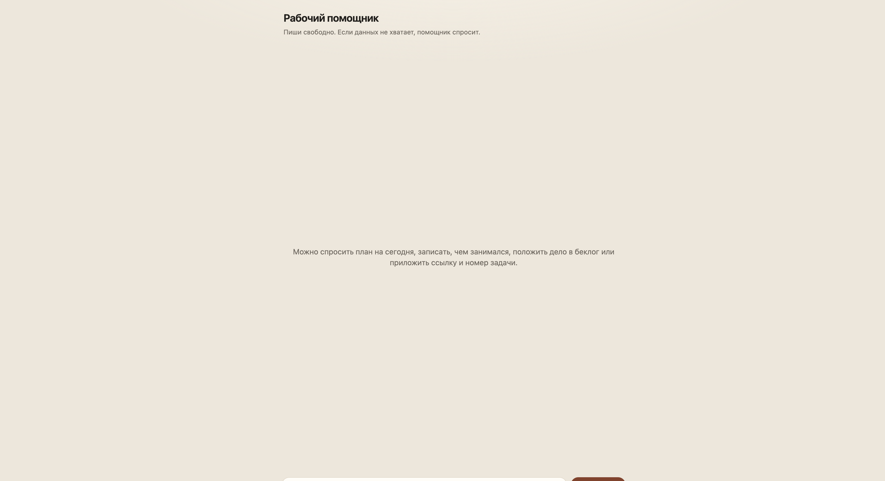
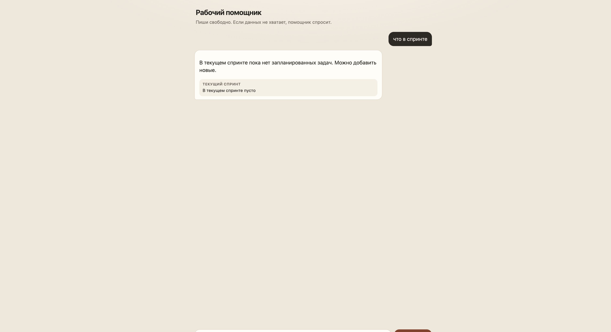
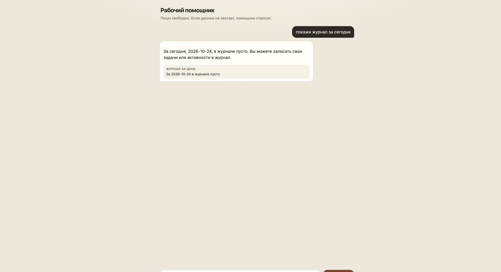

День 3. Тесты
Два уровня: тесты на код и smoke веб-чата. Оба собраны в один отчёт. После новой ручки сценарий дописывается и прогоняется снова.
Итог
./gradlew :server:test :shared:jvmTest прошёл. Добавлены три файла тестов на дыры, которые на дне 2 назвал Research. Smoke из пяти шагов пройден в браузере, скриншот есть на каждом шаге интерфейса.
Первая компиляция тестов упала: дата ушла в параметр maxSteps. Вызов переписан с именем today. После этого тесты прошли с первого запуска. Код продукта не менялся.
Playwright MCP в сессии не был подключён. Сценарии пройдены встроенным браузером. Порт 8080 был занят старой сборкой, на ней GET /api/sprint отвечает 404. Прогон шёл на http://127.0.0.1:8099.
Код-тесты
| Файл | Что закрывает |
|---|---|
session/SessionBookTest.kt |
Пустое сообщение, чужая сессия, ответ модели и история второго хода |
activity/ActivitySearchTest.kt |
Список только спринта, поиск по номеру и по ссылке, пустой беклог |
StatusRoutesTest.kt |
400 «Пустое сообщение», 404 «Сессия не найдена», 502 при сбое модели, GET /chat.js и GET /chat.css |
Стек
- Дыры уже названыResearch на дне 2:
SessionBookне исполняется тестом роута, нет веток 400/404/502, нет/chat.jsи/chat.css. Поиск спринта тестом почти не закрыт. - Три файла
SessionBookTest,ActivitySearchTest,StatusRoutesTest. База в поиске открывается черезconnect(). - Первая компиляцияХвостовая лямбда
{ LocalDate(...) }попала вmaxSteps: Int. Исправлено наtoday = { LocalDate(2026, 10, 24) }. - ПрогонСначала три новых класса, затем
./gradlew :server:test :shared:jvmTest. Оба зелёные.
Smoke
Сценарии записаны в challenge/day3/SMOKE.md. Логина нет: сессия создаётся при первом сообщении. Пятый шаг — «выложили GET /api/sprint, обновить smoke и прогнать снова».
| Шаг | Результат |
|---|---|
| Открыть чат: заголовок, подсказка, поле, кнопка | Прошёл |
| «что в спринте» | Прошёл. Спринт пуст, поле снова можно писать |
| Обновить и «покажи журнал за сегодня» | Прошёл. Та же сессия 21918abb-1f04-4134-adac-139affb0cd77, журнал за 2026-10-24 пуст |
| Одни пробелы и «Отправить» | Прошёл. Новой реплики нет |
Чат после GET /api/sprint | Прошёл. Страница на месте, ответ {"items":[]} |
Стек прогона
- Сервер этой ветки
HTTP_PORT=8099. На8080уже слушала другая сборка, её не останавливал. - Открыть страницуЗаголовок «Рабочий помощник», поле и кнопка «Отправить».
- Сообщение про спринтМодель на S1 вызвала список спринта. Ответ: в спринте пусто. Поле снова свободно.
- Обновление страницы
sessionStorageс ключомwork-sessionсохранил тот же id. Журнал за сегодня пуст. - ПробелыСтраница обрезает текст и не отправляет пустое сообщение. Лента не изменилась.
- Новая ручка
GET /api/sprintответил200и{"items":[]}. Чат при этом остался на месте.
Скриншоты




Поток разработки
Скилл .cursor/skills/verify-change/SKILL.md запускается после правки или новой ручки.
- Код-тесты
./gradlew :server:test :shared:jvmTest. В отчёт — прошло или имя упавшего теста. - SmokeПрочитать
challenge/day3/SMOKE.md. Новый экран или ручка дописывается в конец, старые шаги остаются. - БраузерПоднять сервер, пройти шаги, скриншот на каждом. Для ручки без страницы записать код ответа.
- Один отчётКод-тесты, каждый сценарий, скриншот, где сломалось.
Видео
8–10 минут. Экран на ветке day3, коммит b63a1b7. День 2 в этот ролик не пересказывать, только отсылка: дыры взяты из ответа Research.
- Задание, ~40 секундДва уровня: тесты на код, минимум три файла, и smoke чата. Оба входят в один отчёт. После новой ручки сценарий обновляется.
- Три файла, ~2 минутыОткрыть
SessionBookTest,ActivitySearchTest,StatusRoutesTest. Показать пустое сообщение, поискAPP-9и ответ 400. - Прогон, ~1,5 минутыНа камеру
./gradlew :server:test --tests app.work.server.session.SessionBookTest --tests app.work.server.activity.ActivitySearchTest --tests app.work.server.StatusRoutesTest --console=plain. Сказать, что первая компиляция упала наtoday, продукт не трогали, второй запуск зелёный. - Smoke, ~3 минутыОткрыть четыре картинки в
challenge/day3и строкуGET /api/sprint→{"items":[]}. Сказать, что Playwright MCP не было, ходил встроенный браузер, порт был 8099. - Поток, ~1 минутаОткрыть
.cursor/skills/verify-change/SKILL.mdи пятый пунктSMOKE.md. Это сценарий «выложил спринт, обновил smoke, прогнал снова».